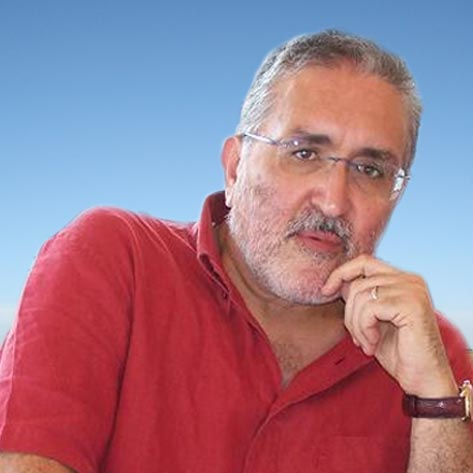

Chi sono
Biografia

Marco Ignazio de Santis, già docente di lettere nel Liceo linguistico e pedagogico «Vito Fornari», è nato a Molfetta nel 1951. È redattore del semestrale letterario «La calce & il dado» e ha collaborato a molte riviste, come «Alfabeta», «Misure critiche», «Alba Pratalia», «I fiori del male», «Rivista italiana di letteratura dialettale», «La Vallisa», «Rivista di scienze religiose», ecc.
Collabora a «Vernice», «La Nuova Tribuna Letteraria», «Risorgimento e Mezzogiorno», «Archivio Storico Pugliese» e «Quindici giorni». Ha diretto le riviste «Studi Molfettesi» (1996-2000) e «Report» (2005-2009).
Giornalista pubblicista, dal 1989 al 1998 ha scritto centinaia di elzeviri e articoli culturali su quotidiani italiani e svizzeri («Giornale di Brescia», «Prealpina», «Gazzetta di Mantova», «Gazzetta di Parma», «L’arena», «Quotidiano» di Lecce, «La Provincia», «Libertà», «Messaggero Veneto», «Corriere del Ticino», «Il Dovere» di Bellinzona, ecc.). Fra i numerosi scritti critici si segnala Pirandello, Chiarelli, Montale, Comi, Bodini e altri autori del ’900 (Genesi, Torino 2023).
"Scrivere è un atto di resistenza contro l'oblio, un tentativo di dare forma permanente ai pensieri che altrimenti svanirebbero."
Tra i riconoscimenti ricevuti figurano il Premio della Cultura della Presidenza del Consiglio per il 1986, il Premio «Umberto Saba» nel 1989 per la raccolta Uomini di sempre (Lacaita, Manduria 1984), il Premio «Renata Canepa» nel 2008 per la silloge Lettere dagli argonauti (La Vallisa, Bari 2007), il Fiorino d’Oro per la saggistica al XXIX Premio Firenze nel 2011 per la biografia Un amico di Garibaldi: Eliodoro Spech, cantante, patriota e soldato (Inprinting, Molfetta 2011) e il Premio speciale della critica «Thesaurus» per «Vaghe stelle» e altri racconti (Genesi, Torino 2012).
Le altre sue sillogi poetiche sono Libro mastro (Levante, Bari 1991), Jesen u srcu («L’autunno nel cuore», Naučna Knjiga, Belgrado 1992), Dal santuario (Edizioni Helicon, Arezzo 2014), Ritorno di fiamma. Poesie umoristiche e satiriche (Genesi, Torino 2016) e Në kërkim të bashkës së artë («Alla ricerca del vello d’oro», Milosao, Saranda 2017). Nel settembre-ottobre del 2006 ha partecipato, come autore italiano invitato, al 43° International Meeting of Writers di Belgrado. Alcuni suoi articoli, racconti e poesie sono stati tradotti in serbo, croato, spagnolo, albanese, sloveno, francese, inglese, latino, polacco e russo.
È uno specialista di studi salveminiani, come Picca, Salvemini, mons. Picone e l’esperimento riformista molfettese del 1902-1904 (in «Studi Molfettesi», n. 13-14, maggio-dicembre 2000, pp. 9-86), W Salvemini. Le elezioni politiche del 1913 nei collegi di Molfetta e Bitonto (Aracne, Roma 2013), Salvemini – d’Annunzio – Pascoli – Prezzolini & C. Personaggi e vicende dell’Italia del primo ’900 (Edizioni Helicon, Arezzo 2019), Salvemini e le elezioni del 1919 (in «Archivio Storico Pugliese», a. LXXIV, Bari, 2021, pp. 164-189) e Giulia Maria Minervini, prima moglie di Gaetano Salvemini (in «Risorgimento e Mezzogiorno», a. XXXIII, n. s., nn. 65-66, Bari, dicembre 2022, pp. 32-67), ecc.